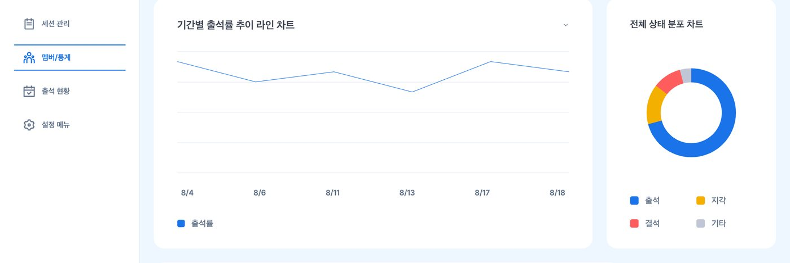
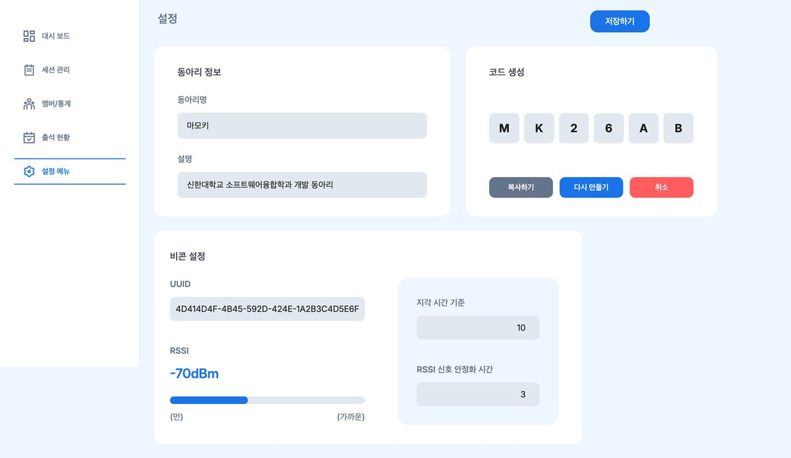
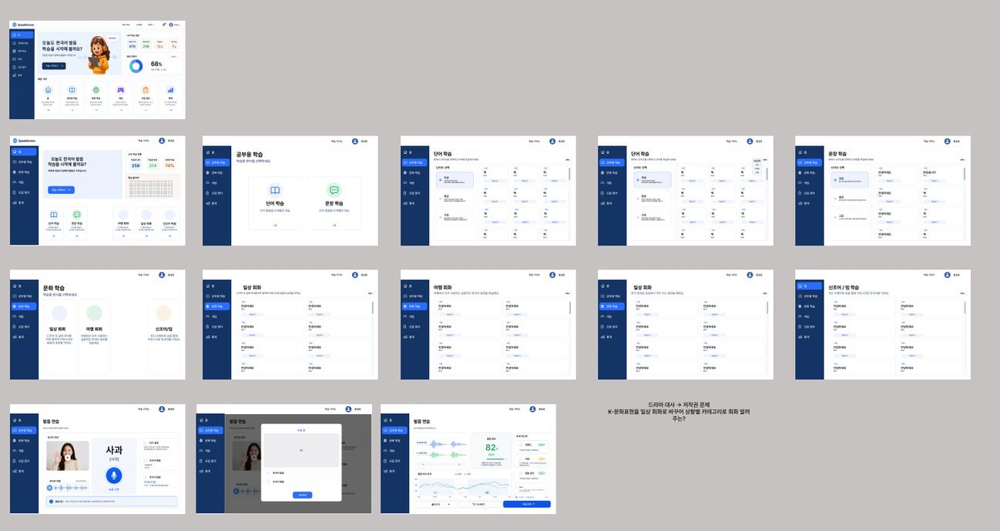
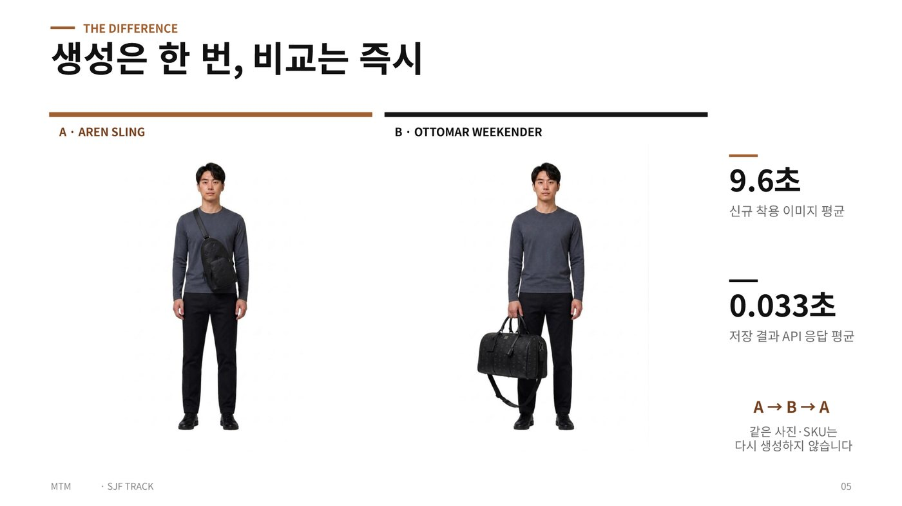
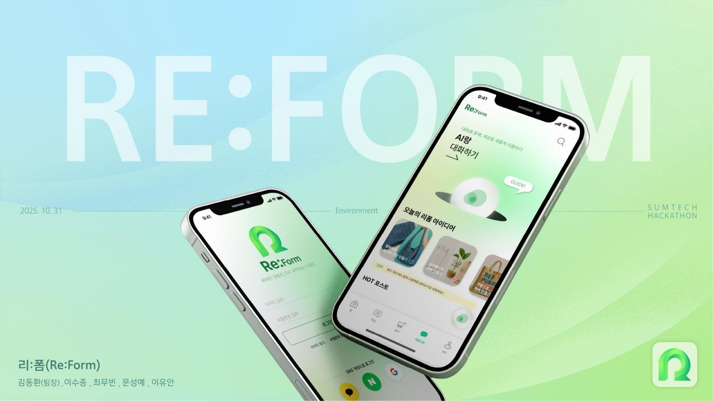
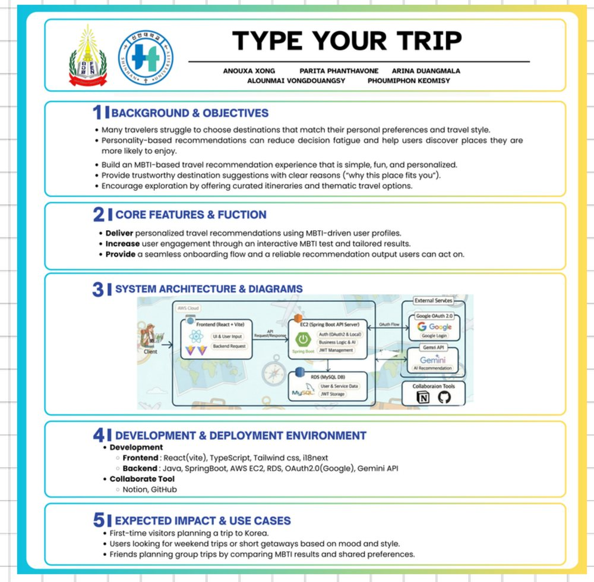

Java · Spring Boot · Python · AWS
설계부터 배포, 운영까지
서버의 처음과 끝을 책임집니다.
팀 프로젝트 8건 서버 담당. 그중 2건은 설계부터 배포까지 단독 수행.
실사용 서비스 운영 중 발생한 전면 장애를 직접 규명·해결하고 재발 방지까지 반영.
- 0커밋
- 0REST API
- 0팀 프로젝트
- 0최다 기여 저장소
모든 수치는 GitHub 커밋 기록 기준. 프로젝트별 본인 커밋 수 표기.
01
About
비전공 출발 · 2년 만에 서버 전담
매 단계마다 결과물 확보. 배운 것은 다음 팀에 그대로 이관.
-
2024.09
소프트웨어융합학과 전과 — 1년 만에 전공 기초 완성
자료구조·알고리즘, 컴퓨터구조, 운영체제, 네트워크, 데이터베이스·데이터 모델링 이수.
데이터베이스는 수업 범위를 넘어 심화 학습 후 SQLD 취득으로 검증.
-
2025.03
학과 코딩 동아리 백엔드 부원 — 가장 어려운 파트 선택
요청 하나가 서버 내부를 통과해 응답이 되기까지의 구조를 단계별로 학습.
반년 만에 대회 서버 담당 수준 도달.
-
2025.10
첫 출전 · 수상 — SUMTECH 해커톤 장려상
교내 앱개발 경진대회 서버 담당. SW중심대학 SUMTECH 해커톤 팀장 겸 백엔드로 참가,
1박 2일 내 기획·구현·발표 완주 후 Environment 트랙 장려상 수상.
-
2026.01
라오스국립대(NUOL) 협력 개발 — 영문 교재 70p 제작
현지 학생과 한 달 협업. 인증·소셜 로그인 담당 및
아키텍처·JWT 동작 해설 영문 학습 자료 70여 페이지 직접 제작.
언어·경험이 모두 다른 팀과 한 달 내 동작하는 결과물 완성.
-
2026.03
동아리 백엔드 운영진 · 멋사대학 14기 선발
1년 만에 배우는 자리에서 가르치는 자리로 전환. 신입 부원 기초 세션·코드 리뷰 담당.
계층 분리·예외 처리·트랜잭션 경계 반복 이슈를 공통 피드백으로 정리해 팀 자산화.
-
2026.04 —
산학연계 프로젝트 서버 전담 · 졸업작품 단독 개발
협력기업 멘토·지도교수 참여 프로젝트에서 서버 전체 담당 및 실운영 배포.
동시에 졸업작품 서버 단독 설계·구현, 커밋 208건 작성.
02
Strengths
팀에 가져다 드릴 수 있는 것
01
운영까지 책임지는 서버
배포로 종료하지 않음. 실사용 중 전면 장애를 원인까지 규명해 해결하고, 재발 시 즉시 원인 코드를 지목할 수 있는 감지 장치까지 구축.
- 실사용 서비스 배포 · 운영
- 전면 장애 해결 + 재발 방지
- 운영 데이터 마이그레이션
02
근거로 설득하는 설계
더 나은 방향은 근거를 정리해 제안하고 관철. 계정 식별 방식을 안전한 구조로 전환, 명세와 실사용의 차이를 찾아 사양 변경 4건 반영.
- 계정 식별 설계 변경 관철
- 사양 변경 4건 제안 · 반영
- 확장 가능 구조로 리팩터링
03
배운 것을 팀에 남기는 사람
혼자 아는 것으로 두지 않음. 영문 학습 자료 70여 페이지로 해외 팀 역량 확보, 동아리 운영진으로 신입 교육·코드 리뷰 수행.
- 영문 백엔드 교재 70p 제작
- 신입 교육 · 코드 리뷰
- Swagger 기반 규약 자동화
03
Stack
실제 프로젝트에서 결과물을 낸 기술만 기재
Backend
- Spring Boot
- Spring Security
- Spring Data JPA
- JWT
- FastAPI
- SSE
Database
- MySQL
- PostgreSQL
- Flyway
- Redis
Infra
- AWS EC2 · RDS · S3
- NCP
- Docker
- docker-compose
- Nginx · Caddy
Tools
- Git · GitHub
- Swagger
- Postman
- Claude Code
- Cursor
AI 활용 방식.
기초 설계 수립과 에러 원인 후보 좁히기에 활용. 수정 방안 판단은 코드·설정을 직접 확인해 결정.
방향 확정 후 구현 단계에서 다시 활용해 속도 확보. 주력이 아닌 Python·FastAPI 영역에서도
파이프라인과 배포 환경까지 기한 내 완성.
04
Work
커밋 수는 GitHub 기여 기록 그대로

관리자 웹 대시보드 — 기간별 추이 · 상태 분포 · 멤버별 비교 · CSV/Excel 내보내기

비콘 설정 — 신호 세기 임계값 · 안정화 시간 · 지각 기준을 배포 없이 조정
- ROLE
- 백엔드 서버 전담
- PERIOD
- 2026.04 – 2026.08
- SCALE
- 도메인 8 · API 41
- STATUS
- 실운영 배포 완료
- 이중 인증 설계 — BLE 비콘 근접 감지 + 세션별 4자리 인증번호 동시 충족 시에만 출석 성립. 인접 공간 우회 감지와 원격 제출 동시 차단.
- 감지 기준 설정화 — 신호 세기 임계값(기본 -70dBm), 안정화 시간(기본 3초), 지각 기준(기본 10분)을 동아리별 설정으로 분리. 배포 없이 현장 조정 가능.
- 동시성 제어 — (회원, 세션) 복합 유니크 제약으로 중복 출석을 DB 차원에서 차단.
- 원자적 일괄 처리 — 세션 종료 시 미출석자 일괄 결석 처리를 단일 트랜잭션으로 보장.
- 관리자 기능 — SSE 실시간 출석 피드, 통계 4종, 조건별 데이터 내보내기, 회원 역할 변경·제명.
- 고객 소통 — 요구사항 기능명세서 합의 후 개발. 명세와 실사용 차이 확인해 사양 변경 4건 제안·반영.
- 규약 자동화 — springdoc-openapi로 API 문서 자동 생성. 웹 대시보드가 해당 문서로 타입 생성해 규약 불일치를 빌드 단계에서 검출.
서버 저장소 ↗

서비스 화면 구성 — 학습 홈 · 단어/문장 학습 · 발음 채점 · 학습 통계 · 오답 노트
졸업작품 · 저장소 최다 기여
한국어 발음 교정 학습 서비스
커밋 208
- ROLE
- 서버 단독 담당
- PERIOD
- 2026.03 – 2026.08
- SCALE
- 도메인 19 · API 36
- CODE
- Java 136파일
- 단독 설계·구현 — 도메인 19개, 엔티티 15개, REST API 36개, 에러코드 46종. 전 엔드포인트 Swagger 문서화 완료.
- 조회 성능 개선 — 목록 조회 N+1을 일괄 조회 + Map 매핑으로 해결. 목록 크기와 무관하게 쿼리 수 고정.
- 계정 식별 설계 전환 — 이메일 병합 시 타인 계정 병합 위험을 근거로 제시해 팀 설득. (제공자, 제공자별 사용자 ID) 조합을 식별키로 확정.
- 확장 구조 리팩터링 — 인터페이스 + 추상 클래스 + 팩토리 구성. 소셜 제공자 추가 시 기존 코드 수정 불필요.
- 외부 AI 장애 격리 — 분석 서버 통신을 전용 클라이언트로 캡슐화. 연결 5초 / 응답 60초 타임아웃 분리, 서버 오류와 무응답을 구분된 예외로 변환.
- 응답 규약 분리 — 필터·페이징을 DB 쿼리에서 처리하고 페이징 응답을 전용 DTO로 래핑해 프레임워크 내부 구조 노출 차단.

발표자료 — 신규 생성 평균 9.6초 대비 저장 결과 API 응답 평균 0.033초
- ROLE
- 백엔드
- PERIOD
- 2026.08
- ASSET
- 128 SKU · 953 이미지
- RESULT
- 상위 15팀
- 생성 결과 재사용 구조 — 동일 사진·SKU 조합 재생성 차단. 신규 생성 평균 9.6초 대비 저장 결과 응답 평균 0.033초 확보.
- API 구현 — 제품 상세 조회, 목록 페이징, 공통 페이지 응답 구조, 사진 삭제.
- 모델 선정 — 초기 OpenAI 구현 후 응답 시간·품질 이슈 확인. 비교 테스트 수행 및 팀 합의로 Gemini 전환.
- 비용 산정 — 3상품 비교 세션당 출력비 약 $0.16 산정. 월 1K / 10K / 100K 세션 기준 원가 시나리오 제시.
- 품질 검증 — 백엔드 테스트 90건 통과, 실패 0건. 로고·절대 크기는 브랜드 검수 필요 항목으로 한계 명시.

SUMTECH 해커톤 Environment 트랙 출품작 — 장려상 수상
- ROLE
- 팀장 · 백엔드
- PERIOD
- 2025.10
- TRACK
- Environment
- RESULT
- 장려상 수상
- 팀장 수행 — 5인 팀 리딩. 1박 2일 내 기획·구현·발표 완주.
- 담당 구현 — 이미지 업로드 파이프라인, 사용자 프로필 업로드, 회원 상태·부가정보 처리.
- 서비스 구성 — 촬영한 물건을 AI로 분석해 업사이클 방법 추천, 완성품을 마켓·커뮤니티·쪽지로 연결.
- 범위 조정 — 잔여 시간에 맞춰 필수 기능을 재정의하며 완성도 확보.
- ROLE
- 기상 연계 주의 기능
- PERIOD
- 2026.05
- DB
- PostgreSQL · Flyway
- 스키마 설계 · 버전 관리 — 기상 규칙 및 지역 격자 테이블 설계, Flyway 마이그레이션으로 버전 관리.
- 공공데이터 적재 파이프라인 — 대용량 엑셀 시드 파싱 제한 및 인코딩 이슈 해결 후 안정 적재 완료.
- 좌표 변환 — 사용자 주소를 기상청 격자 좌표로 변환하는 로직 구현.
- 품질 확보 — 판정 결과 회귀 테스트 작성 및 스모크 테스트 절차 문서화.
팀 공모전 · 파이프라인 & 배포 담당
역사 고증 검색 — 시각자료 파이프라인
커밋 26
- ROLE
- 파이프라인 · 배포
- PERIOD
- 2026.06
- STACK
- Python · FastAPI
- 배치 파이프라인 구현 — 원본 파싱 → 외부 API 수집 → LLM 검수 → 인덱스 적재.
- 응답 속도 보호 — 수집을 요청 경로 밖 오프라인 배치로 분리해 검색 응답 시간 영향 차단.
- 멱등성 확보 — 개체·원본 URL 조합 중복 검사로 재실행 시 동일 결과 보장.
- 링크 만료 대응 — DB에는 영구 정보만 저장하고 노출 시점마다 서명 URL 재발급.
- 테스트 가능 구조 — 외부 의존성을 주입 가능하게 분리해 실제 호출 없이 단위 테스트 24건 작성.
- 배포 환경 구축 — Dockerfile, docker-compose, Caddy 리버스 프록시, CORS 설정.

프로젝트 포스터 — 시스템 아키텍처 · AWS EC2/RDS · OAuth 2.0 · Gemini API
라오스국립대(NUOL) 협력 프로젝트
LAKO — MBTI 기반 한국 여행지 추천
커밋 7
- ROLE
- 백엔드 · 학습 지원
- PERIOD
- 2026.01
- INFRA
- AWS EC2 · RDS
- 인증 구현 — 로컬 로그인 및 Google·Facebook OAuth 2.0 소셜 로그인, 액세스·리프레시 토큰 재발급 엔드포인트.
- 기능 구현 — MBTI 진단 로직 구현 및 로그아웃·탈퇴 시 토큰 처리 정리.
- 학습 자료 제작 — 아키텍처 흐름, 계층별 애노테이션, JWT 동작 원리를 코드 단위로 해설한 영문 자료 70여 페이지 작성 후 스터디 운영.
- 협업 성과 — 언어·개발 경험이 모두 다른 팀과 1개월 내 동작하는 결과물 완성.
팀 프로젝트 · 인증 & 인프라
여운 — 디지털 추모 페르소나
커밋 33
- ROLE
- 인증 · 실행 환경
- PERIOD
- 2026.05
- DB
- PostgreSQL
- 인증 구현 — JWT 인증 필터 및 SecurityConfig 설계, 회원 조회·삭제 기능.
- 실행 환경 통일 — docker-compose 구성 및 헬스체크 확인으로 팀 전체 개발 환경 일치.
- 문서화 — Swagger 적용으로 프론트 연동 규약 확정.
개인 학습 프로젝트
- blue-green — Nginx · GitHub Actions 기반 무중단 배포 구성 실습
- Auto Receipt Register — 영수증 업로드 시 노션 가계부 자동 등록
- docker-compose-practice — 컨테이너 오케스트레이션 학습
05
Problem Solving
실사용 환경에서 마주친 문제와 해결 과정
비콘 출결 · 실사용 환경
전면 장애 원인 규명 및 재발 방지 완료
- 상황
- 관리자용 실시간 출석 현황 배포 직후 전체 API 응답 중단. 이미 사용자가 이용 중인 서비스.
- 접근
- 개별 기능이 아닌 전체 동시 실패라는 점에서 공통 자원 문제로 범위 축소. 커넥션 풀 확인 결과, 장시간 유지되는 실시간 연결이 DB 커넥션을 점유해 여유분 소진.
- 해결
- 운영 프로필
open-in-view 비활성화로 장애 해소. 커넥션 장기 점유 시 스택트레이스가 남도록 누수 감지 설정 추가. 해당 설정이 배포 이미지에 미포함되는 구조를 파악해 컨테이너 환경변수에 이중 명시.
- 결과
- 서비스 정상화 및 재발 시 원인 코드 즉시 식별 가능한 상태 확보. 배포 방식 변경에도 설정이 유지되도록 안전장치 이중화.
비콘 출결 · 운영 환경
시각 오차 3중 고정 및 기존 데이터 정정
- 상황
- 운영 환경에서만 출석·세션 시각이 9시간 이르게 저장.
- 접근
- 코드가 아닌 실행 환경 차이로 판단해 컨테이너 기동 설정 확인. 컨테이너 UTC 기동으로 애플리케이션 기본 타임존 불일치 확인.
- 해결
- Dockerfile 타임존, 애플리케이션 기본 타임존, 컨테이너 환경변수 3중 고정. 기저장 데이터는 마이그레이션 스크립트로 정정.
- 결과
- 출결 기록 시각 정확도 확보 및 운영 데이터 무손실 복구.
비콘 출결 · 인증
토큰 재발급 흐름 정리로 재로그인 없는 사용성 확보
- 상황
- 액세스 토큰 만료 시 재발급 실패로 매번 재로그인 필요.
- 접근
- 요청의 컨트롤러 도달 여부부터 역추적. 재발급 경로가 시큐리티 허용 목록과 JWT 필터 양쪽 모두에서 열려야 동작하는 구조 확인.
- 해결
- 두 지점 모두 예외 처리. 액세스 토큰 계열과 리프레시 토큰 계열 에러코드 분리로 클라이언트가 재발급·재로그인을 응답만으로 구분하도록 정리.
- 결과
- 토큰 만료 시에도 재로그인 없이 요청 연속성 확보. 프론트 분기 기준을 명확한 규약으로 제공.
06
Awards & Certifications
수상 · 선발
- 2026.08 멋사 중앙 해커톤 SJF 트랙 — 82팀 중 상위 15팀
- 2026.03 멋쟁이사자처럼 멋사대학 14기 백엔드 트랙 선발
- 2025.10 SW중심대학 SUMTECH 해커톤 장려상 (Re:Form · 팀장)
자격
- 2026.06 TOPCIT Level 3
- 2025.08 SQLD
- 2024.05 컴퓨터활용능력 2급
- 2023.08 한국사능력검정시험 1급
학력
- 2021.03 — 2027.02 신한대학교 소프트웨어융합학과 (졸업 예정)